User guide: onboard, change, disable and audit human users across your managed Snowflake accounts
User guide — v1.0 — November 19, 2026
About the screenshots. All screenshots use fictitious sample data (accounts such as Acme Foods and users such as JANE_SMITH). Your accounts, users and numbers will differ. The app runs in Snowsight, so the browser frame around it will look slightly different.
1. Before you start
Who can use the app: only users who hold ACCOUNTADMIN in EIGHTY451 and have a row in the app’s duty table. If either is missing, the app shows a lock message and stops.
Opening it: in Snowsight (EIGHTY451), switch to the ACCOUNTADMIN role and open Projects » Streamlit » MANAGED_ACCOUNTS_ADMIN.
Nothing changes immediately. Every change to a managed account is a request. A different admin must approve it, and a background worker then carries it out (normally within 5 minutes) and verifies the result.
Four eyes. You can never approve your own request.
“Unknown” is not “OK”. Observed values come from the last reconciliation. A blank or UNKNOWN value means it has not been verified yet. It never means enabled, disabled or MFA-enrolled.
2. Duties and what they allow
Your duties are set per account (or for all accounts) by the app owners. Buttons you are not allowed to use are greyed out.
Duty
You can
View
See every page, the inventory, operations and audit trail.
Operate
Upload CSVs, request disable / re-enable / password links / MFA enrollment, request internal admin access, run preflight and reconcile.
Approve
Approve or reject customer requests (including roles to be created from a CSV), retry or cancel operations, execute the queue, pause or resume accounts, and deliver secure links.
Privileged approve
Approve internal ACCOUNTADMIN access, edit account settings and the role catalog.
3. Finding your way around
The sidebar groups the pages. Your user name is shown at the bottom of the sidebar.
84.51 ACCOUNTADMIN access requests, approvals, revocation and secure handoff
Tables can be searched, sorted, resized, downloaded or shown full screen from the small toolbar that appears when you hover over them. Scroll a table sideways to see more columns.
4. Overview
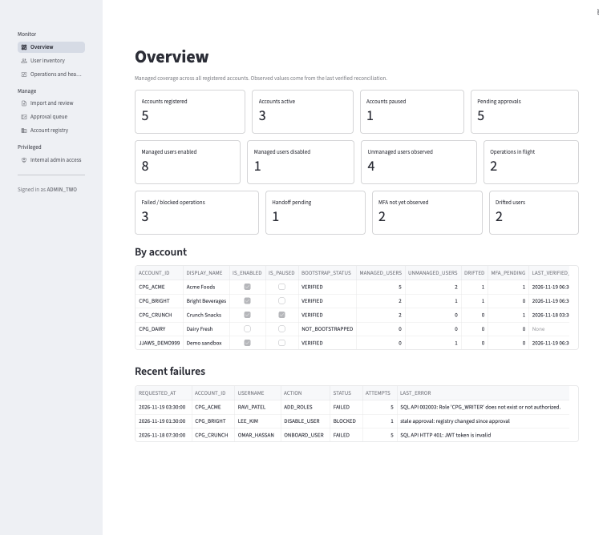
Overview: coverage metrics, per-account summary and recent failures.
Metric tiles: registered, active and paused accounts; pending approvals; managed users enabled and disabled; unmanaged users observed; operations in flight; failed or blocked operations; secure links waiting for delivery; users whose MFA has not yet been observed; users with drift.
By account: one row per managed account with its status and user counts. Accounts with the most drift are listed first.
Recent failures: the latest failed, partial or blocked operations with their error. Open Operations and health to retry or cancel them.
Read-only. Data refreshes about every minute; reload the page for the latest figures.
5. User inventory
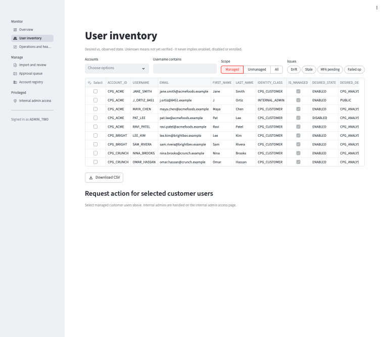
User inventory: desired state (what the app wants) next to observed state (what was last seen in the account).
Filters
Accounts – leave empty for every account you can see.
Scope – Managed (created or adopted by the app), Unmanaged (seen in the account but not managed), or All.
Issues – any combination of Drift, Stale (not verified recently), MFA pending and Failed op.
Key columns
DESIRED_STATE / OBSERVED_DISABLED, DESIRED_ROLES / OBSERVED_ROLES, MFA_EVIDENCE, DRIFT_FLAGS, LAST_VERIFIED_AT and LAST_OPERATION_STATUS. Use Download CSV to export the filtered list.
Request an action for users
Tick Select for one or more managed customer users in a single account. Internal admins are handled on Internal admin access.
Under Request action for selected customer users, choose Disable, Re-enable, Password setup link or MFA enrollment.
Enter a Reason (required) and a Ticket, then click Request for N user(s).
Operations and health: every request, accounts needing attention, and the audit trail.
Account and Status filters. By default the page shows work that is queued, running, failed or blocked. Click Refresh to reload.
Steps: tick exactly one operation to see each statement the worker ran, with its outcome, HTTP status, Snowflake error code and error message.
Retry selected re-queues approved operations that failed, partially completed or were blocked (for example after the user enrolled MFA). Cancel selected stops them. Both need the Approve duty.
Account health lists accounts that are paused, have recent consecutive failures, or have not passed preflight.
Audit trail shows the latest 500 events: who imported, submitted, approved, rejected or executed what, and when.
7. Import and review
Use this page to onboard users, add or replace their roles, and disable or re-enable them in bulk from a customer CSV.
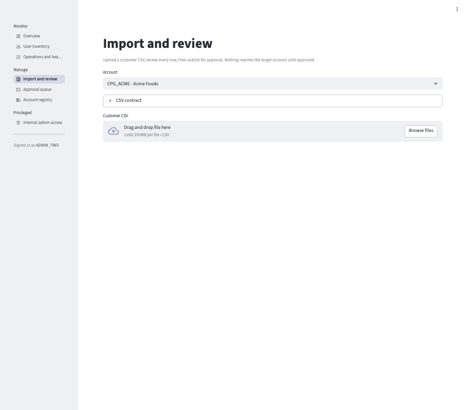
Choose the account, then upload the CSV. Open CSV contract for the required format.
Create the user (disabled), attach the MFA policy, grant roles, then enable
Required; one row per role
ADD_ROLES
Grant extra roles to an existing managed user
Required
SET_MANAGED_ROLES
Make the listed roles the user’s complete set of app-managed roles (others the app granted are revoked)
Required
DISABLE / REENABLE
Disable or re-enable an existing managed user
Must be empty
Give a user several roles with one row per role; all of that user’s rows must agree on email, names, default role and action. default_role must be one of the user’s roles. Files may have up to 2,000 rows (1 MB).
Review the rows
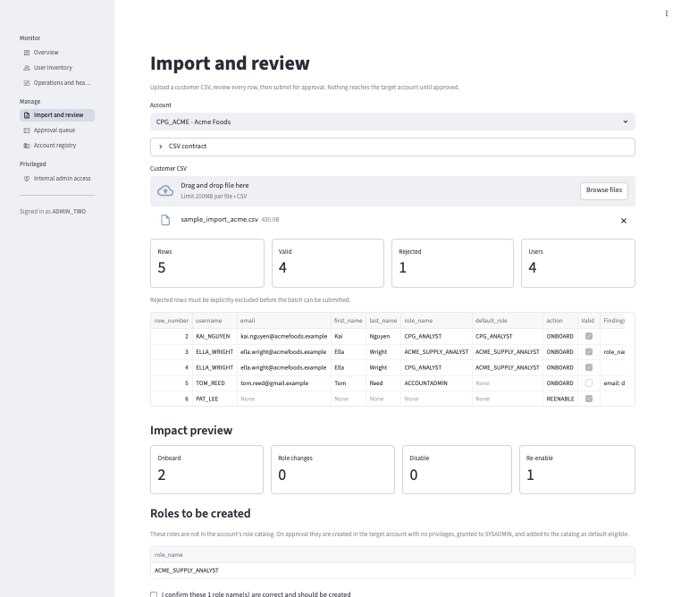
After upload: counts, each row with its validity and findings, the impact preview, and roles that will be created.
Every row is checked: format, approved email domain, blocked or protected users, roles in the account’s catalog, and no passwords, links or SQL text in any field.
The Findings column (scroll right) explains each problem, for example role_name: ACCOUNTADMIN is blocked or email: domain not approved for this account.
A rejected row must be ticked Exclude before the batch can be submitted. Fix the CSV and upload again if the row is needed.
Impact preview counts the users who will be onboarded, have role changes, or be disabled or re-enabled.
Roles to be created
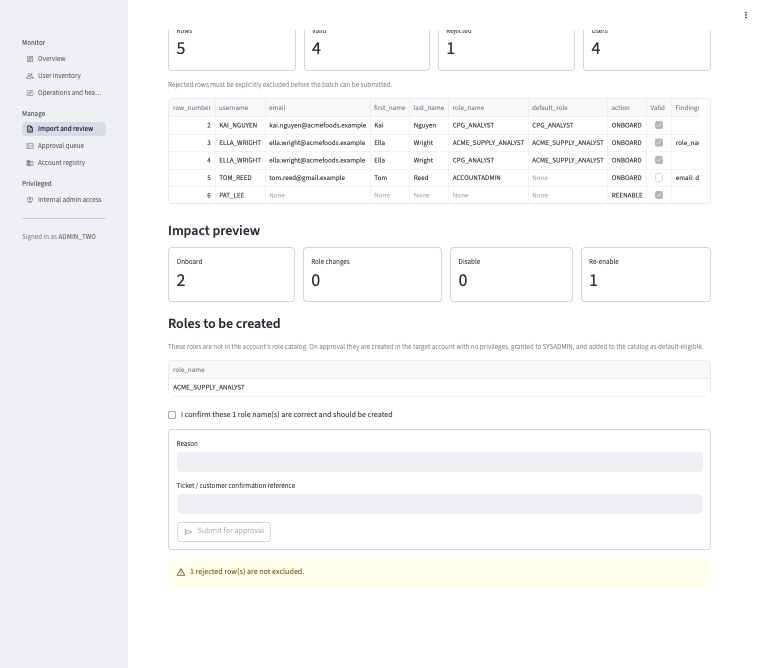
Roles named in the CSV that are not yet in the account’s role catalog are listed here. You must confirm them before submitting.
If a row names a role that the account’s role catalog does not contain, the row stays valid and its finding reads role_name: <ROLE> will be created (new role). When approved, the role is created in the managed account, granted to SYSADMIN, and added to the catalog so it can be used as a default role.
New roles start with no privileges. Ask the account owner to grant them access to warehouses and data.
Roles that are blocked, built-in Snowflake roles (ACCOUNTADMIN, SYSADMIN and so on), or switched off in the catalog are never created; those rows are rejected.
A batch can create at most 10 new roles.
Check the spelling. A typo in role_name creates a new, misspelled role rather than failing. Read the Roles to be created list carefully before ticking the confirmation.
Submit
Exclude every rejected row.
If roles will be created, tick I confirm these role name(s) are correct and should be created.
Enter a Reason and a Ticket / customer confirmation reference (both required).
Click Submit for approval. One request is created per user and action, plus one CREATE_ROLE request per new role.
If the account’s settings or role catalog change between upload and submit, the submit is refused and you are asked to upload again.
8. Approval queue
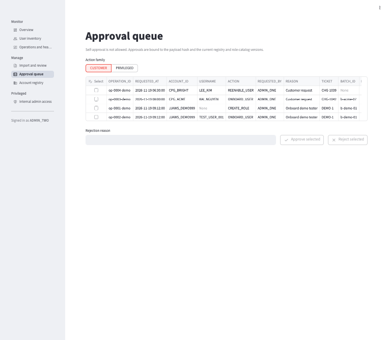
Approval queue: pending customer requests, including a CREATE_ROLE request and the onboarding that depends on it.
Choose CUSTOMER or PRIVILEGED. Privileged requests (internal ACCOUNTADMIN grants and revocations) need the Privileged approve duty.
Review each row: account, user, action, requester, reason, ticket, and the Payload (scroll right) showing exactly what will be done. VERSION_CHECK shows STALE if the account’s settings changed after the request was made.
Tick Select, then Approve selected, or enter a Rejection reason and click Reject selected.
Requests you made yourself are flagged and will be refused.
Selecting more than 10 rows shows a reminder to confirm the customer reference before bulk approval.
For a CSV that creates roles, approve the CREATE_ROLE request and the user requests in the same batch. The user requests wait until the role exists. Rejecting a CREATE_ROLE request also cancels the user requests that need it.
A stale request is blocked when you try to approve it; ask the requester to submit it again.
9. Account registry
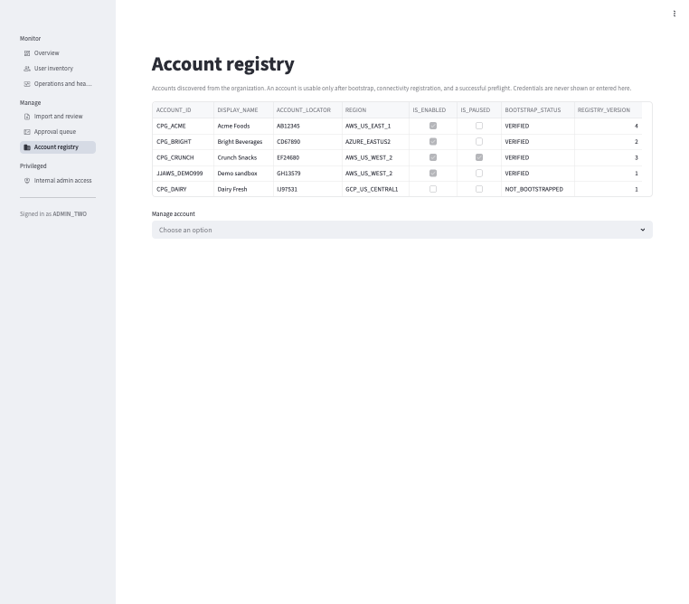
All registered accounts. An account can be used only after bootstrap, connectivity and a successful preflight.
Select an account in Manage account to see its details.
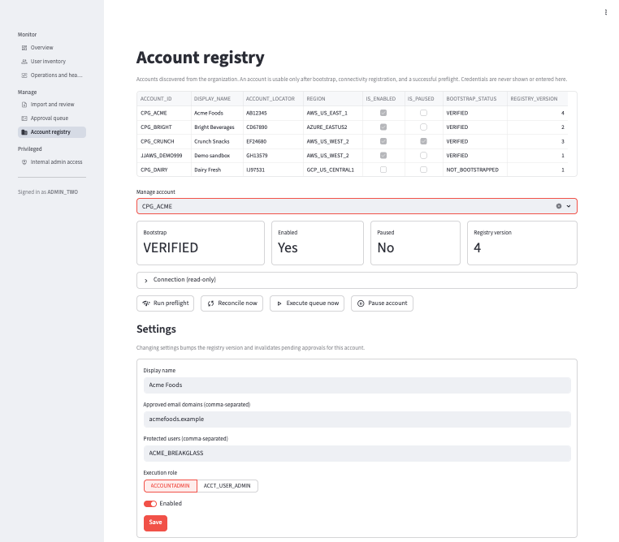
Account detail: status, run buttons and settings.
Status and actions
Tiles show Bootstrap status, Enabled, Paused and the Registry version. Connection (read-only) shows the host, service user, execution role and key fingerprint; credentials are never shown.
Run preflight checks the connection without changing anything. Reconcile now refreshes the inventory from the account. Both need Operate.
Execute queue now runs approved work immediately instead of waiting for the next scheduled run. Pause account / Resume account stops or restarts all work for the account. Both need Approve.
Settings
Display name, approved email domains, protected users (never changed by the app), execution role and Enabled. Saving needs Privileged approve and invalidates pending approvals for the account, because they were checked against the old settings.
Role catalog
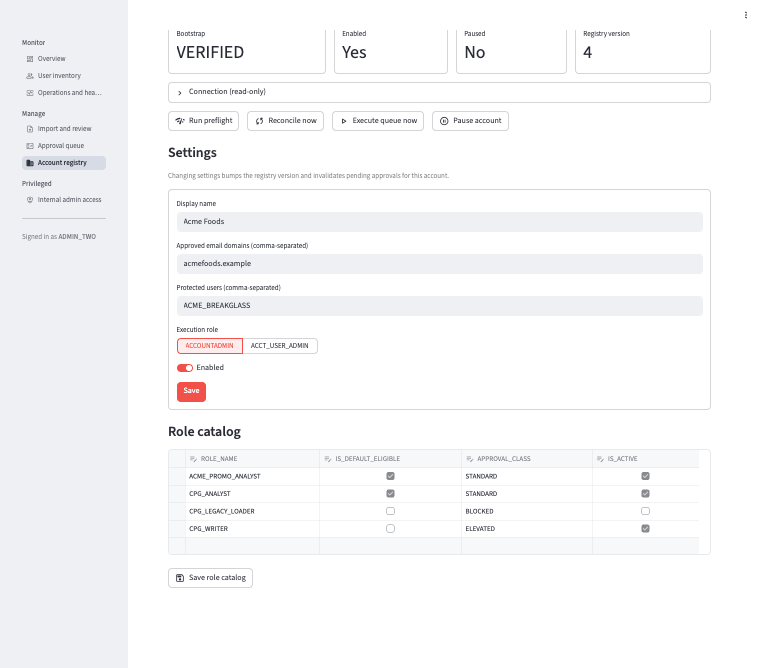
Role catalog: which roles CSV imports may grant in this account.
IS_DEFAULT_ELIGIBLE – the role may be a user’s default role.
APPROVAL_CLASS – STANDARD, ELEVATED or BLOCKED. Blocked roles are rejected in CSVs.
IS_ACTIVE – untick to stop a role from being granted. A CSV can never switch it back on.
Add a row at the bottom for a role that already exists in the managed account, then click Save role catalog (Privileged approve). Roles created from a CSV import are added automatically.
Saving the role catalog also invalidates pending approvals for the account.
10. Internal admin access
For 84.51 employees who need ACCOUNTADMIN in a managed account. Employees must be on the approved roster. ACCOUNTADMIN is granted only after independent approval and verified MFA, and is never a default role.
Request
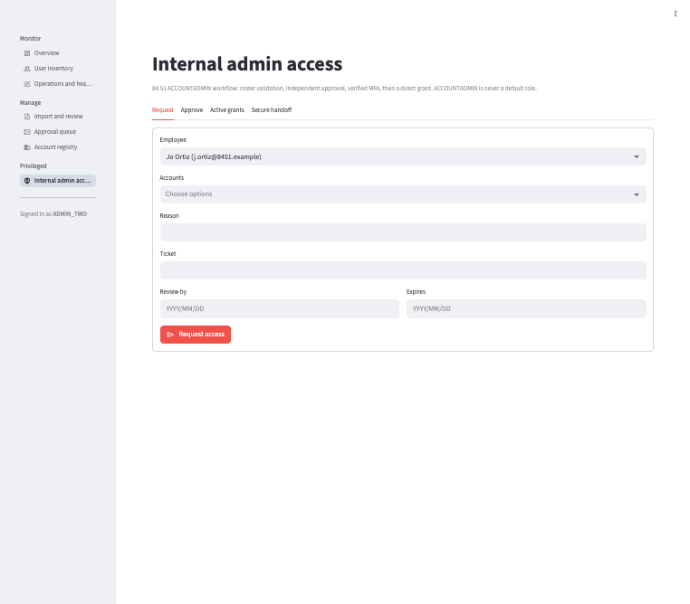
Request tab: employee, accounts, reason, ticket, review date and expiry.
Choose the employee and one or more accounts (only enabled, unpaused accounts that run as ACCOUNTADMIN are listed). Reason and Expires are required. Click Request access.
Approve
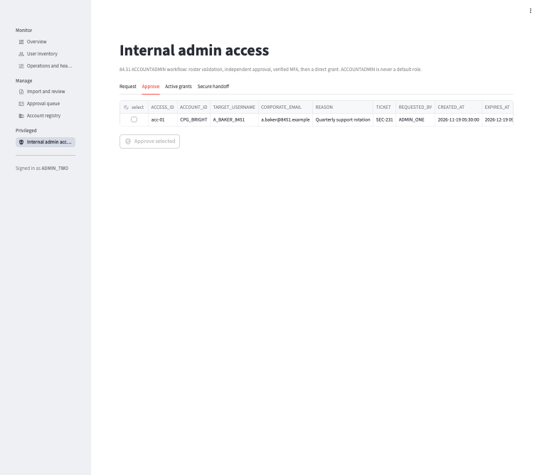
Approve tab: a different privileged approver approves each request.
After approval the worker creates the admin’s user. The ACCOUNTADMIN grant waits in AWAITING_MFA until the admin has enrolled in MFA.
Active grants
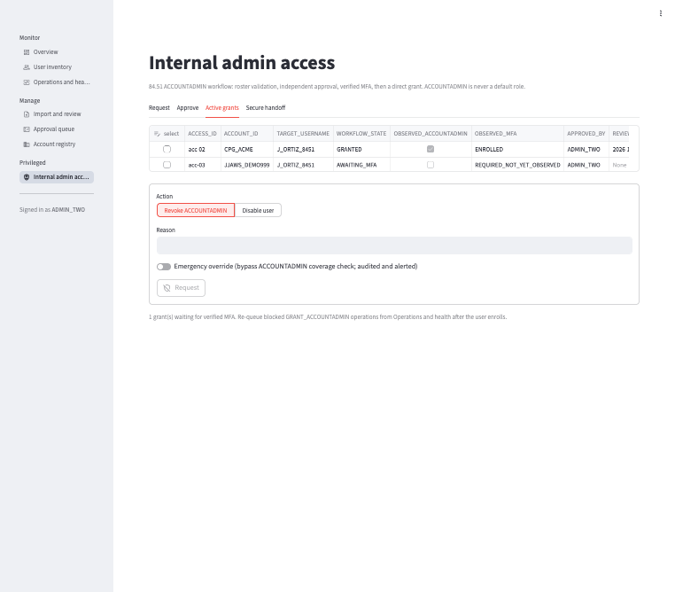
Active grants: current access, its MFA evidence, and revocation.
Select a grant, choose Revoke ACCOUNTADMIN or Disable user, enter a reason and click Request. A privileged approver must approve it.
Revocation is refused if it would leave fewer than two human ACCOUNTADMIN users, unless Emergency override is on. Overrides are audited.
Grants waiting for MFA are counted below the form. After the admin enrolls, retry the blocked grant from Operations and health.
Secure handoff
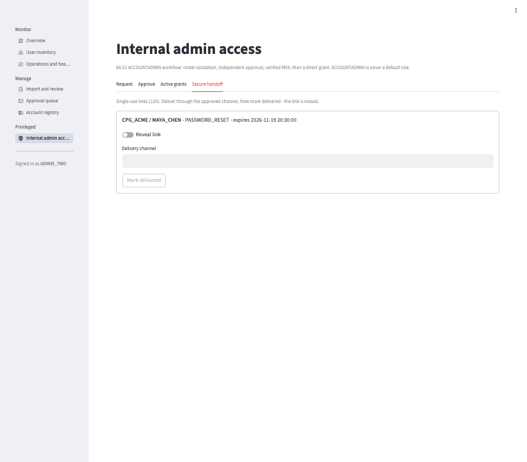
Secure handoff: single-use password and MFA links waiting for delivery.
Switch on Reveal link only when you are ready to deliver it.
Send it through the approved channel.
Enter the Delivery channel and click Mark delivered. The link is erased immediately.
Links are single use and expire after 12 hours. Never paste them into tickets, chat channels or email threads that others can read.
11. Common tasks
Onboard new customer users
Operator:Import and review → choose the account → upload the CSV → exclude rejected rows → confirm any new roles → enter reason and ticket → Submit for approval.
Approver (a different person):Approval queue → review → Approve selected.
Wait for the next scheduled run, or click Execute queue now on the Account registry.
Operator: request a Password setup link from the User inventory; after approval and execution, deliver it from Secure handoff.
After the user signs in and enrolls MFA, the next reconciliation (or Reconcile now) shows MFA_EVIDENCE = ENROLLED.
Onboard users with a role the account doesn’t have yet
Upload the CSV as above. Check the Roles to be created list and tick the confirmation.
The approver approves the CREATE_ROLE request and the user requests from the same batch.
The worker creates the role first, then onboards the users with it.
Ask the account owner to grant the new role access to the data it needs.
Offboard a user
User inventory → select the user → Disable → reason and ticket → request. After approval and execution, the inventory shows the user disabled and verified. For many users, upload a CSV with DISABLE rows instead.
Change a user’s roles
Upload a CSV with ADD_ROLES (adds) or SET_MANAGED_ROLES (replaces the app-managed set). Roles granted outside the app are never removed.
A request failed
Open Operations and health, select the operation, and read Steps for the error. Fix the cause, then Retry selected or Cancel selected. If an account keeps failing it pauses itself after five consecutive failures; fix the cause, run a preflight and then Resume account.
12. Status reference
Operation status
Status
Meaning
PENDING_APPROVAL
Waiting for a different admin to approve
QUEUED
Approved and waiting for the worker. Also used while a user request waits for a role to be created, and while a retry waits for its next attempt.
RUNNING
The worker is executing it now
SUCCEEDED
Done and verified by reading back the account
FAILED
Snowflake returned an error, or retries ran out
PARTIAL
Some steps completed; review the steps
BLOCKED
Stopped by a safety check (stale approval, MFA not enrolled, protected user, a dependency failed…). Needs a person.
CANCELLED
Rejected, cancelled, or superseded by a newer disable
Inventory values
Value
Meaning
MFA_EVIDENCE
ENROLLED, REQUIRED_NOT_YET_OBSERVED (the user has not enrolled yet), UNKNOWN (not verified), DRIFT (an internal admin holds ACCOUNTADMIN without MFA)
DRIFT_FLAGS
Differences between desired and observed state, for example MISSING_DESIRED_ROLES, DISABLED_BUT_DESIRED_ENABLED, AUTH_POLICY_MISMATCH, CUSTOMER_HAS_ACCOUNTADMIN. Drift is reported only; it is never repaired automatically.
ONBOARDING_STATE
PROVISIONING → PROVISIONED_PENDING_HANDOFF → HANDOFF_ISSUED, or DISABLED
IDENTITY_CLASS
CPG_CUSTOMER, INTERNAL_ADMIN or UNMANAGED
13. Questions and problems
You see
What to do
“does not hold ACCOUNTADMIN in EIGHTY451”
Ask for the ACCOUNTADMIN grant. New grants can take a while to be recognized.
“has no duties assigned”
Ask the app owners to add you to the duty table.
A button is greyed out
You don’t have the duty for it on that account, or nothing is selected.
Account missing from the Import page
Only enabled, unpaused accounts can receive imports. Check the Account registry.
role_name: not in this account's role catalog
The role name is not valid (use uppercase letters, digits and underscores, starting with a letter).
role_name: disabled or blocked in this account's role catalog
A privileged approver must re-activate the role in the catalog, or use a different role.
default_role: not default-eligible / must be one of the user's requested roles
Pick a default-eligible role that is also listed in one of the user’s rows.
Submit refused: registry or role catalog changed
Upload the CSV again.
BLOCKED: stale approval
Settings changed after approval. Submit the request again.
User request stuck in QUEUED after a CSV with new roles
Approve the CREATE_ROLE request from the same batch.
CREATE_ROLE blocked: requires ACCOUNTADMIN execution role
The account runs with the restricted role. Ask a privileged approver to change the execution role, or have the role created manually and added to the catalog.
Internal grant stays AWAITING_MFA
The admin must enroll MFA; then retry the blocked grant from Operations and health.
Account shows paused: circuit breaker
Five failures in a row. Review the failed steps, fix the cause, run a preflight, then resume the account.